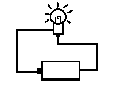

かならずお読みください→
工作入門 はんだ付け
工作を始めましょう
おもちゃが動かなくなった．見ると電線が切れている．こんな時どうしていますか？
当センター内の小児施設では，訓練におもちゃをたくさん利用しています．こんな時には早く修理したいものです．早く安く修理したいのならば，まず自分でトライすべきでしょう．高価で複雑な機器では簡単にはいきませんが，おもちゃならば何とかなるかもしれません．ここでは，初めての方を対象に電気関係を中心に簡単な工作の仕方について説明します．電気工作を題材としたWEBサイト（ホームページ）は数多くありますが，『難しいことは全く知らない．はんだこてなど使ったことがない』といった方を対象に，『できるようになる』ことを目的にして，わかりやすさ第一をモットーにしています．
よって，厳密な意味で不正確な記述も含まれることもありますので，ご承知ください．
今回は，はんだ付けについて説明します．ご存じのように，電気は金属を通ります．小学校で乾電池や豆電球を使った勉強を思い出してください．この時は，わにぐちクリップ付きの電線で電気の通り道を作っていましたが，実際の道具では外れにくい方法で電線をつなぎます．最も使われる方法がはんだ付けです．はんだは熱すると液体で，冷えると固体になる接着剤のようなものです．はんだを熱で溶かし，電線などの金属を接合するのです．はんだ自身も金属ですから，これで電気が通る仕組みです．
はんだ付けにはいくつかの道具が必要です．
はんだこて
電気ヒータの熱で加熱する道具です．こて先やヒータ部分は高温になりますので，やけどや火事の原因になります．『よい子はおとなといっしょに使いましょう』と言うべき道具です．大きな部品をつけるには熱量の大きなもの，小さな部品には熱量の小さなものという具合にたくさんの種類があります．熱量はワット数で表示されます．私は６０Ｗのものを使っています．これら一般的な製品はホームセンターなどで千円程度で購入できます．はんだ
はんだは銀色の針金のような外見をして，巻き線の状態で売られています．はんだには種類がたくさんあるのですが，初めての場合は特に気にせず，太さ1mm程度の一般的なものを購入するとよいでしょう．これもホームセンタなどで３００円位で購入できます．はんだこて台
はんだこては相当の高温になりますので，取り扱いに注意しないと，机などを焦がしたり，やけどをします．このようなときはこて台があると便利です．こて先を掃除するクリーナ（スポンジが入った容器．水を入れて使う．ぬれ雑巾で代用可能）が付いているこて台が一般的です．またはんだこての温度を調節する機能が付いている台もあります．一般的なこて台は，ホームセンターなどで千円くらいで購入できます．
はんだ付けの手順
まず，はんだ付けしようとする２つの金属両方にはんだをつけます．
はんだをつけるためには，事前にその金属をこてで加熱します．大きな金属は加熱するのに時間がかかり，小さなものはすぐに加熱できます．使用するはんだこての熱量や対象の金属の大きさによって加熱する時間は変わります．対象の金属を十分に加熱してから，はんだを接触させるとはんだが溶けて銀色の膜状に広がり，金属は銀メッキしたような外観になります．初めてハンダ付けに取り組むひとは，いきなり金属同士を付けようとせずに，まず金属にはんだをつけることを目標にしましょう．まとめると，１，はんだこてを金属につけて加熱し，２，はんだを金属につけ必要な量をつけ，３，はんだこてとはんだを金属から離すのです．タイミングをつかむところが練習のポイントです．自信のない方は，電線の切れ端などで練習しましょう．ただし，電線を加熱しすぎると，ビニルの被覆が溶けてしまいます．タイミングが重要です．
左：加熱が足りないためはんだがなじんでいない．中：よい例．溶けたはんだが導線にしみこんでいる
右：加熱しすぎて電線の被覆が溶けている．はんだも変質し色が鈍くなる．初めてはんだ付けをする方がよくやるのは，はんだこてではんだを溶かし，これを冷えたままの金属につけようとする事です．これは間違いです．これでは，はんだが水玉のように丸まり，金属のうえに乗って，一見してついているようには見えても，簡単にとれてしまいます．はんだが玉になってしまうのは，金属の加熱が足りないからです．はんだこてを金属にあてる時間を長くしましょう．加熱しすぎてもはんだは玉になりますが，熱したフライパンに落とした水のようにはじけます．このときは，はんだクリーナーにこて先をあてて冷やします．
左：加熱が足りず，銅板の上にはんだが玉状についているだけ，こするととれる．
右：加熱していくと，はんだが銅板となじみ，はんだの山が平たくなる．
何度もつけたりはずしたりしていると，徐々につけたはんだが汚れて黒くなってきます．はんだは長い時間高温にしておくと内部の成分（フラックス）が変質します．こうなるとはんだの品質も低下し，外れやすくなります．一旦はんだをこてでぬぐうようにして取り去り，新しくはんだをつける方が良いでしょう．はんだ付けは手早くやるのがコツです．
はんだこての先端も徐々に汚れてきます．こまめにクリーナーでぬぐい，掃除をしましょう．
はんだが溶けにくい，付きにくい原因は多くがはんだこて先の汚れです．
理想的なはんだこての先端は，はんだの銀色をしています．左：汚れが付いている．これをクリーナでこすると右のように銀色になる．
またはんだ付けする金属の表面が汚れているとはんだは付きにくくなります．汚れがひどいときには，紙ヤスリなどでみがくと良いでしょう．
以上の作業は『予備はんだ』と呼ばれています．続いて，目的の二つの金属を接合する『本はんだ』です．ここではじめて両方の金属を接合します．予備はんだをすると簡単にできます．
接合しようとする金属の両方にはんだの膜ができ，メッキ状になりましたら，いよいよ両方をつけます．両方のはんだ面をつけて，こてで加熱し，両方のはんだがなじむようにします．又必要に応じてはんだを追加します．はんだが全体に行き渡っていることを確認します．
予備はんだなどずいぶん手間のかかることをするものだ，とお考えかしれません．
ところが，はんだこてを着けたり離したりのタイミングが重要なはんだ付け作業では，時間をかけてこねこねと作業をすると作業の品質がどんどん低下します．下準備を十分にして，リズミカルなはんだ付け動作をすれば，結局速く良い作業ができます．言うなる『急がば回れ』です．
はんだ付けができました．でも金属部分がむき出しでは，ショート（短絡）しやすく，様々なトラブルの原因にもなります．熱収縮チューブを使うと良いでしょう．
はんだ付けする前に，対象となる電線や端子より一回り太い熱収縮チューブを電線に通しておきます．はんだ付けが終わったら，むき出し金属の部分にチューブをずらし，加熱して収縮させます．
手が足りない
両手にはんだこてとはんだを持って作業をすると，はんだ付けをする部品がぐらぐらして不安定になり，作業がはかどりません．こんな時には，やや大きめの書類を挟むクリップで部品を固定すると便利です．洗濯ばさみでも良いのですが，軽すぎて安定しないし，間違ってはんだこてを当てると，溶けてしまいます．また，はんだをクリップで固定し，部品とはんだこてを両手に持つ方が作業しやすい場合もあります．
ストリップ？！
電線は，中心の何本かの導線をビニルの被覆でおおう構造をしています．はんだ付けするためには，この被覆を取り除く必要があります．この作業をストリップと言います．初めて電気工作をする人が苦労する作業です．
専用の工具（ストリッパ）もありますが，やや高価です．穴付きニッパの穴に電線を乗せ，ニッパの刃先を閉じ横に引くとビニル被覆を取り除くこともできますが，穴の大きさと電線の太さがそろっていないとうまくいかない事もあります．
太めの電線ならカッターナイフで電線を転がすようにして，被覆に切れ込みを入れ，被覆の先端を抜き取るときれいにとれます．カッターナイフで転がすときに力を入れすぎると，導線もきれてしまいます．力加減がうまくできれば簡単で早いです．細い電線では，この力加減が難しく，内部の導線も切断しやすいです．刃先がなまって切れにくくなったカッターを使うと，うまくいきます．
さらに早く被覆を取り除くために，よく切れるニッパで被覆だけ引きちぎる方法もあります．私は小学生の時からこれでやっていますが，人によって様々な流儀があるようです．早い話が，速く出来て，こわれにくければやり方はどれでもいいのです．
まとめ
工作シリーズの第一回として，はんだ付けを説明しました．
はんだ付けは電気工作の基本です．ここから様々な工作の可能性が広がっていきますので，ぜひ身につけておきたい技能のひとつです．この文章のはじめにおもちゃの例を挙げましたが，コミュニケーションエイドなど電気電子機器をはじめとして，ナースコールスイッチなども視野に入ってきます．
上手になるためには，練習が必要です．練習によりだんだん上手になってきます．また関係する知識も増えてくると，それまで出来なかったことがだんだん出来るようになります．これはスポーツと同じことです．
経済状態が良く，福祉や医療が錦の御旗だった頃には，はんだ付けなど誰かに頼めば良かったのですが，最近はなかなかそうもいかないでしょう．腕さえあれば，必要なものが早く安く手に入ります．自分で作れれば，自分で直せます．また他の人が出来ないことが出来るようになることが，専門性を高めることだと思います．
2018/3/19 UTF-8 に変更
03/05/15 公開